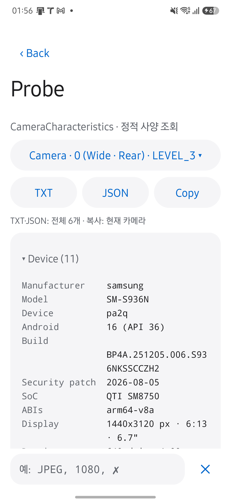

HAL CAMERA / User Guide
What the HAL claims.
Probe에서 카메라가 공개한 사양을 확인하세요. 카메라를 열지 않고 CameraCharacteristics를 읽어, Camera2 HAL이 공개한 사양을 카메라별 표로 보여 줍니다. 이 값은 지원 사양이며 실측 결과는 아닙니다. 그 선언대로 통과하는지는 CTS가, 실제로 얼마나 걸리는지는 Benchmark가 답합니다.
앱에서 Probe를 여세요
- Live에서
Lab → Probe를 엽니다. - 확인할 카메라를 선택합니다. 처음에는 Live에서 고른 카메라가 표시됩니다.
- 필터에
JPEG처럼 찾을 단어를 입력하고 결과를 누릅니다.
확인할 결과: 선택한 카메라의 사양과 지원 값이 표시됩니다. 읽지 못한 항목은 실패 목록에 남습니다. 실제 출력 조합이 동작하는지는 CTS로 따로 확인하세요.
다른 검사를 하려면 Lab으로 돌아갑니다. Probe는 카메라를 열지 않습니다.
아래 화면은 2026년 9월 29일 Galaxy S25+·Android 16에서 HAL CAMERA 0.15.0을 실행해 촬영했습니다. 촬영 조건과 확인 범위를 함께 확인하세요. 이미지를 누르면 원본이 열립니다.

사양 표를 읽으세요
| 확인할 항목 | 확인하는 이유 |
|---|---|
| 카메라 목록 | 항목 이름은 앱 전체가 함께 쓰는 Camera · 0 (Wide · Rear) 표기이며, 뒤에 하드웨어 레벨이 붙습니다. 공개 ID뿐 아니라 논리 카메라 뒤의 물리 카메라도 Camera · 0.2 (UWide · Rear)처럼 별도 항목으로 읽습니다. 앱이 직접 열 수 없는 물리 카메라도 사양은 보입니다. |
| 섹션 | IDENTITY, CAPABILITIES, SENSOR, LENS, CONTROL, PROCESSING, REQUEST, REQUEST · RESULT KEYS, SESSION KEYS(API 28 이상), MANDATORY STREAM COMBINATIONS(API 29 이상) 다음에 STREAMS가 출력 형식별로 나뉘어 옵니다(STREAMS · PRIVATE (SurfaceTexture), STREAMS · PRIVATE (MediaRecorder), STREAMS · JPEG처럼). 그 뒤에 HIGH SPEED VIDEO, REPROCESSING INPUTS, ALL CHARACTERISTICS입니다. 섹션 제목을 누르면 접거나 펼칩니다. |
| enum 값의 이름 | CameraMetadata 상수에서 reflection으로 읽으므로 새 API 값도 숫자가 아니라 이름으로 표시됩니다. |
| 읽지 못한 항목 | 카메라나 섹션을 읽지 못하면 빈칸이 아니라 실패 목록에 남깁니다. 내보낸 파일에도 무엇이 빠졌는지 적힙니다. |
| key 이름 목록 | REQUEST · RESULT KEYS와 SESSION KEYS는 값이 아니라 key 이름의 목록입니다. 사양 표는 어떤 key를 요청에 넣을 수 있고 결과로 돌려받는지만 알고, 그 값은 요청마다 정해지므로 여기에 없습니다. |
| 필터 | 단어를 넣으면 그 단어가 든 줄만 목록으로 나오고, 항목을 누르면 해당 줄로 이동합니다. 값이 여러 줄인 항목은 첫 줄과 남은 줄 수만 보입니다. 예: JPEG, 1080, ✗. |
A capability table is a promise.
Measure before you trust it.
사양을 내보내세요
TXT와 JSON은 모든 카메라의 사양을 파일로 공유하고, 복사는 현재 카메라만 클립보드에 넣습니다. 이미지 픽셀은 포함되지 않습니다. 같은 기기의 빌드 전후를 비교하거나, 다른 기기의 HAL이 무엇을 공개하는지 나란히 볼 때 JSON을 씁니다. Benchmark 결과 JSON과는 별개 파일이며 자동으로 연결되지 않습니다.
구현과 코드 근거
Live 카메라는 Lab 진입 전에 닫힙니다. 화면 배치 기준은 APP-UI.md의 “Lab과 독립 화면”에 있습니다.
CameraProbeReader가 카메라 사양을 읽고, CameraProbeSnapshot 모델을 거쳐 화면 표·TXT·JSON으로 만듭니다. Reader만 CameraManager를 알며, 모델과 렌더러는 JVM 테스트로 검증합니다.
저장소의 app/src/main/java/dev/halcamera/camera/에서 CameraProbe.kt(모델·TXT·JSON 렌더러), CameraProbeReader.kt(CameraManager 읽기)와 app/src/main/java/dev/halcamera/CameraProbeActivity.kt(화면)를 확인하세요. 코드 확인과 기기 검증의 범위는 Validation에서 구분합니다.
다음 단계: 사양 표에서 본 스트림 조합이 실제로 열리고 판정을 통과하는지 CTS로 확인하세요.